Planera föräldraledigt ihop
Planera föräldraledigheten tillsammans: se hur många dagar var och en har kvar, lägg in perioder i kalendern och jämför olika planer.
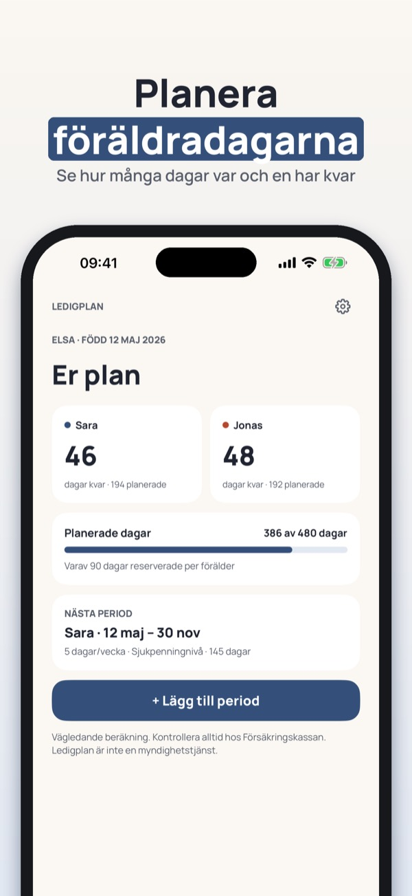
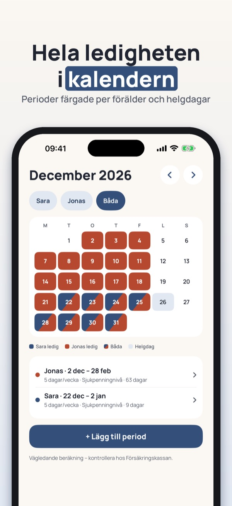
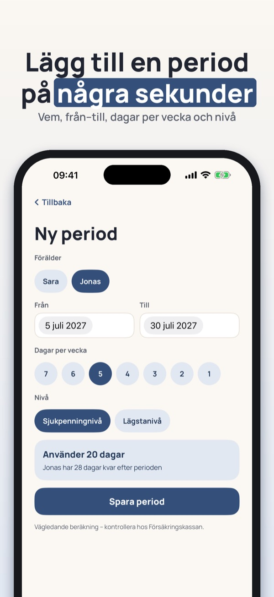
Ledigplan hjälper er att planera föräldraledigheten tillsammans och se hur många dagar ni har kvar.
Översikt, kalender och regler för ett barn och en plan kan användas utan köp. Ledigplan Plus är ett engångsköp som låser upp delning med partner, scenarier, export och flera barn. Ingen prenumeration.
Beräkningen är vägledande. Ledigplan är fristående och inte kopplad till Försäkringskassan, NAV, Udbetaling Danmark eller Kela. Ansökan gör du alltid hos myndigheten.
Terms of Use (EULA): https://www.apple.com/legal/internet-services/itunes/dev/stdeula/
Privacy: https://baytechbv.github.io/privacy/ledigplan-nordic/
Planlegg permisjonen sammen
Planlegg foreldrepermisjonen sammen: se hvor mange uker hver av dere har igjen, legg inn perioder i kalenderen og sammenlign ulike planer.
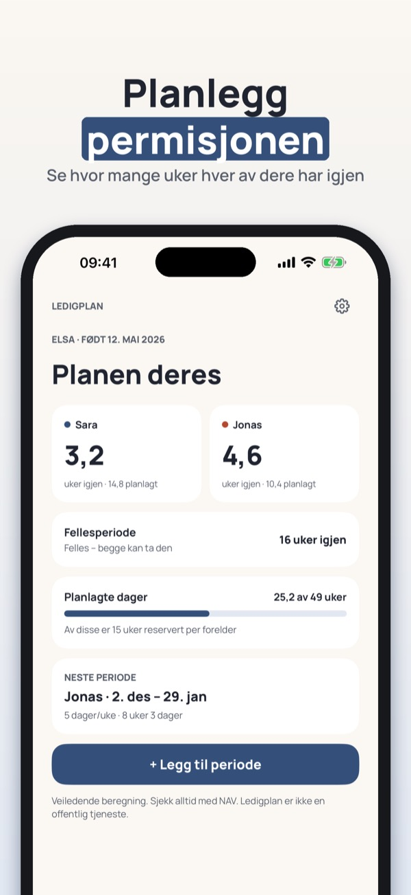
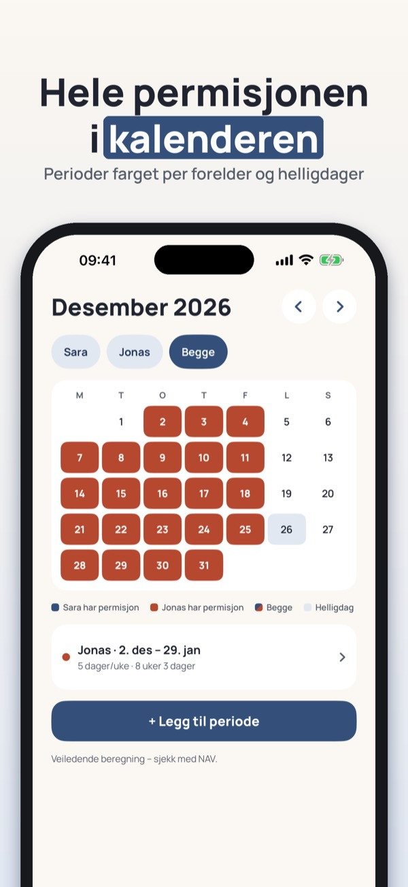
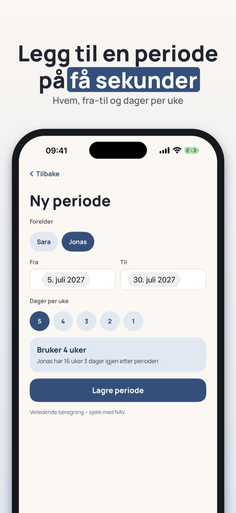
Ledigplan hjelper dere å planlegge foreldrepermisjonen sammen og se hvor mye dere har igjen.
Oversikt, kalender og regler for ett barn og én plan kan brukes uten kjøp. Ledigplan Plus er et engangskjøp som låser opp deling med partner, scenarioer, eksport og flere barn. Ingen abonnement.
Beregningen er veiledende. Ledigplan er uavhengig og ikke tilknyttet NAV, Försäkringskassan, Udbetaling Danmark eller Kela. Søknaden sender du alltid til myndigheten.
Terms of Use (EULA): https://www.apple.com/legal/internet-services/itunes/dev/stdeula/
Privacy: https://baytechbv.github.io/privacy/ledigplan-nordic/
Planlæg barslen sammen
Planlæg barselsorloven sammen: se hvor mange uger hver af jer har tilbage, læg perioder i kalenderen og sammenlign forskellige planer.
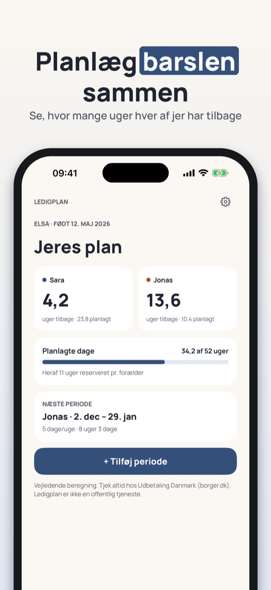
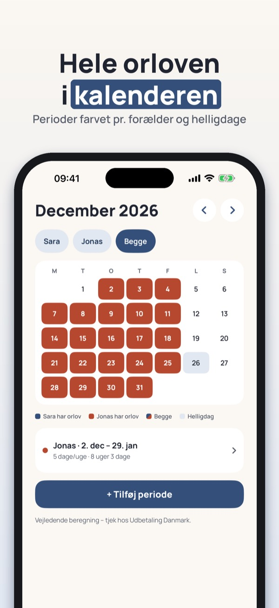
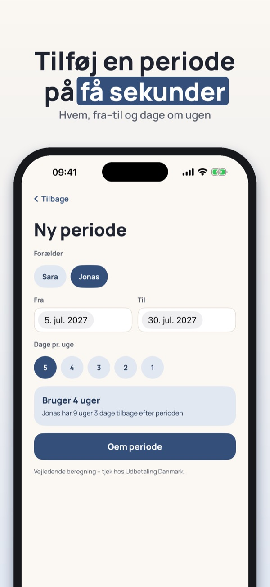
Ledigplan hjælper jer med at planlægge barslen sammen og se, hvor meget I har tilbage.
Oversigt, kalender og regler for ét barn og én plan kan bruges uden køb. Ledigplan Plus er et engangskøb, der låser op for deling med partner, scenarier, eksport og flere børn. Intet abonnement.
Beregningen er vejledende. Ledigplan er uafhængig og ikke tilknyttet Udbetaling Danmark, Försäkringskassan, NAV eller Kela. Ansøgningen sender du altid til myndigheden.
Terms of Use (EULA): https://www.apple.com/legal/internet-services/itunes/dev/stdeula/
Privacy: https://baytechbv.github.io/privacy/ledigplan-nordic/
Suunnitelkaa vapaa yhdessä
Suunnitelkaa vanhempainvapaa yhdessä: näe montako päivää kummallakin on jäljellä, merkitse jaksot kalenteriin ja vertaa eri suunnitelmia.
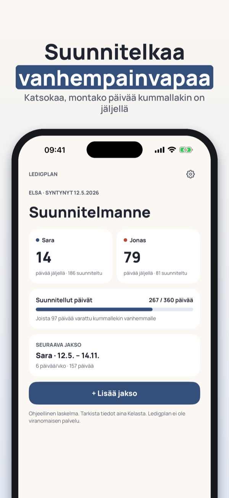
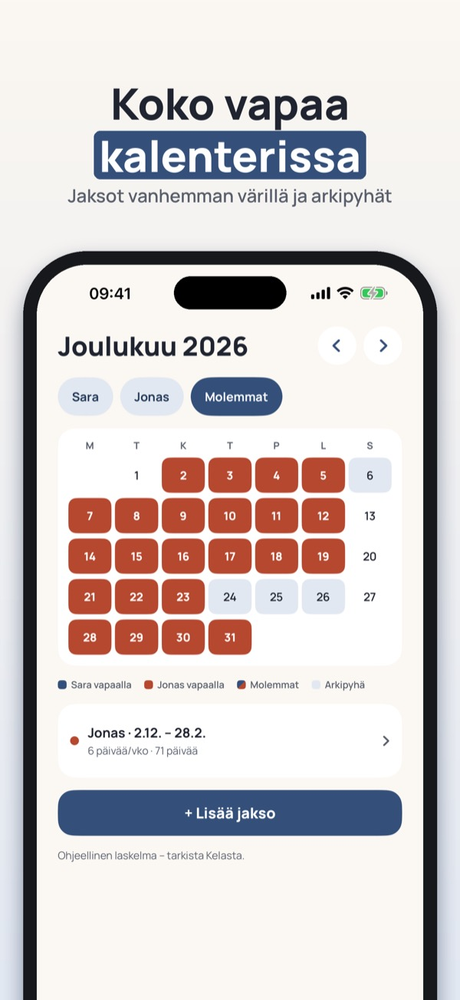
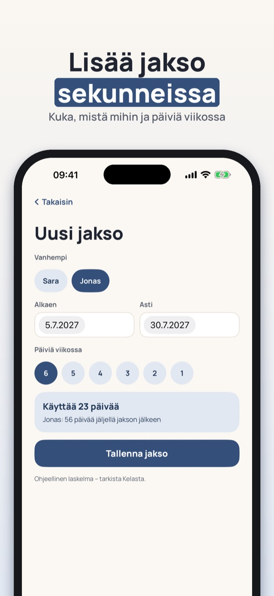
Ledigplan auttaa suunnittelemaan vanhempainvapaan yhdessä ja näkemään, montako päivää on jäljellä.
Yleiskatsaus, kalenteri ja säännöt yhdelle lapselle ja yhdelle suunnitelmalle ovat käytettävissä ilman ostoa. Ledigplan Plus on kertaosto, joka avaa puolison kanssa jakamisen, skenaariot, viennin ja useamman lapsen. Ei tilausta.
Laskelma on ohjeellinen. Ledigplan on itsenäinen eikä liity Kelaan, Försäkringskassaniin, NAV:iin tai Udbetaling Danmarkiin. Hakemuksen teet aina viranomaiselle.
Terms of Use (EULA): https://www.apple.com/legal/internet-services/itunes/dev/stdeula/
Privacy: https://baytechbv.github.io/privacy/ledigplan-nordic/